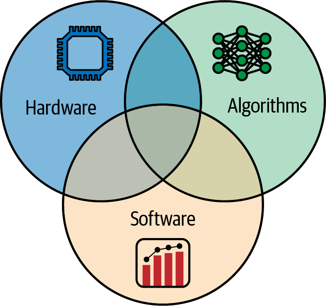
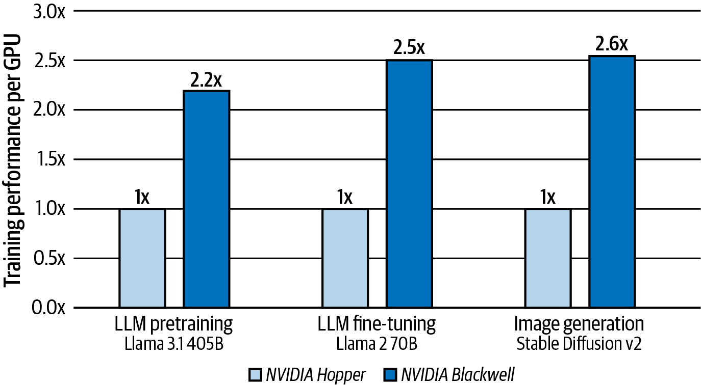
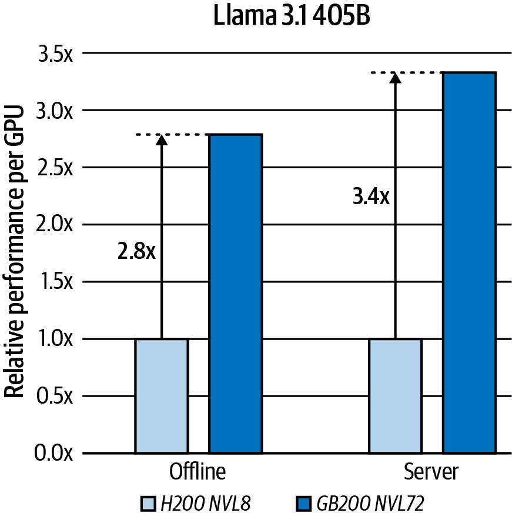
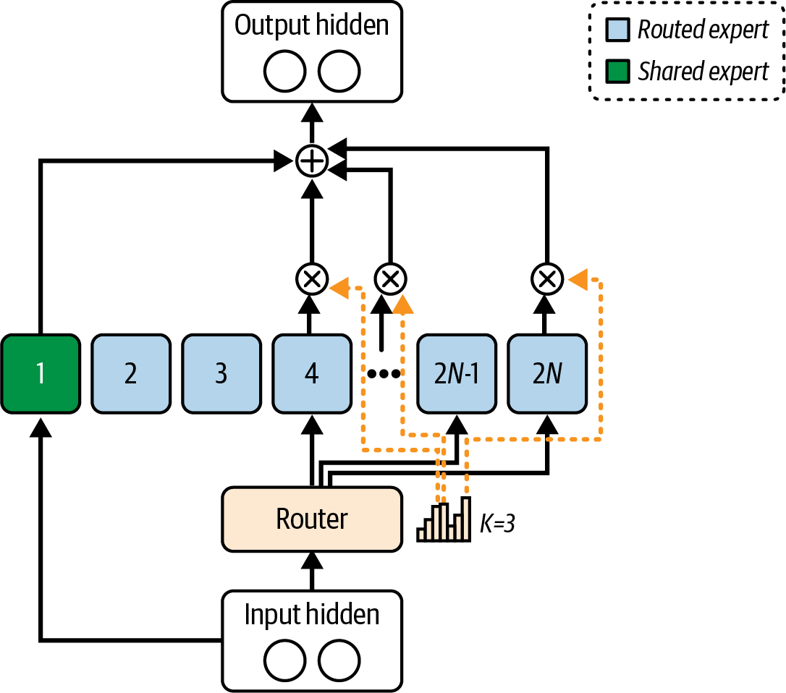

2024 年末，中国一家名为 DeepSeek.AI 的小型初创公司震动了整个 AI 社区：他们在无法使用当时最新、最先进的 NVIDIA GPU 的情况下，训练出了一个前沿大语言模型（LLM）。受出口管制限制，DeepSeek 的工程师无法获得顶级的 NVIDIA Blackwell（B200、B300 等）或 Hopper（H100、H200 等）GPU，因而转而采用当时在本地可以买到且符合出口规定的替代产品，其中包括 NVIDIA H800 GPU。他们利用自定义内核以及模型蒸馏等高级优化技术，从这些能力相对有限的 GPU 中榨取出最大性能。
尽管存在这些限制，DeepSeek.AI 仍然训练出了 DeepSeek-R1 模型，其推理能力接近当时使用 NVIDIA 最强芯片训练的领先前沿模型。这一案例说明，精通 AI 系统性能工程的从业者和研究人员，无论受到何种约束，都能够充分发挥现有硬件的潜力。
例如，DeepSeek 的工程师把通信带宽视为一种稀缺资源，对在线路上传输的每一个字节都进行优化，从而在这套基础设施上实现了许多人认为不可能做到的事情。他们通过新颖的软件和算法优化克服限制，将数千块能力受限、且仅由有限带宽互连连接的 GPU 横向扩展为大规模系统。
与 DeepSeek 的做法相比，美国和欧洲最大的 AI 前沿实验室走的是“蛮力”路线。这些实验室继续追求更大的计算集群和更大的模型。模型规模已经从数百万参数激增至数十亿，如今又达到数万亿参数。尽管规模每扩大 10 倍都会解锁性质上全新的能力，但这也需要付出巨大的成本并消耗大量资源。
例如，据报道，训练 OpenAI 的 GPT-4（2023 年）估计耗资约 1 亿美元，而训练 Google 的 Gemini Ultra（2023 年末）估计耗资高达约 1.91 亿美元。这表明，随着模型规模和成本持续增长，提高资源效率将是今后的必然要求。
DeepSeek 声称，其模型训练所耗费的计算成本不到 600 万美元，比 GPT-4 和 Gemini Ultra 等模型低一个数量级。与此同时，在 DeepSeek 所报告的基准测试中，其模型性能可与成本高得多的闭源模型系统相媲美。
尽管有人质疑这项 600 万美元成本声明是否可信，也质疑该数字究竟包含了什么（例如是否仅指单次训练运行）、排除了什么（例如实验和模型开发流水线），但这一消息仍一度震动美国金融市场。受此消息影响，NVIDIA 股价在一天之内下跌约 17%。市场担忧 DeepSeek 的效率创新会使未来所需的 NVIDIA 硬件减少。虽然这一市场反应有些过度——NVIDIA 股价也在随后的交易日中回升——但它表明，AI 效率方面的突破可能对全球金融市场产生重大的经济影响。
除模型训练之外，DeepSeek 还通过具有硬件感知能力的新颖算法来改进 Transformer 架构，从而显著提升推理效率；大多数现代前沿 LLM 都以该架构为基础。DeepSeek 清楚地证明，巧妙的 AI 系统性能工程优化能够彻底改变超大规模 AI 模型训练与推理的经济性。本书余下各章将介绍这些优化。
由此得到的深刻认识是：在这样的规模下，从系统中榨出的每一点性能，都可能转化为数百万乃至数十亿美元的成本节省。消除任何一个瓶颈，都可能对训练吞吐量和推理延迟产生超乎比例的影响，进而降低成本并提升最终用户的整体满意度。简而言之，AI 系统性能工程并不只是追求速度，而是要让过去不可能实现的事情既成为可能，又在成本上可承受。
在第 1 章中，我们将深入探讨 AI 系统性能工程师这一职业。在大规模人工智能时代，这一角色已经变得至关重要。本章将全面介绍这项职业所承担的多方面职责，以及它对现代 AI 系统产生的关键影响。
我们首先回顾 AI 工作负载的演进，重点说明计算方式如何从传统范式转向满足当代 AI 应用的需求。这一背景有助于我们理解为什么 AI 领域需要专业的性能工程。
随后，本章将深入介绍 AI 系统性能工程师所需的核心能力。我们会考察这一岗位必备的技术素养，包括对硬件架构、软件优化技术和系统级集成的深刻理解。此外，我们还会讨论解决问题、沟通与协作等软技能的重要性；面对 AI 项目跨学科的特点，这些能力不可或缺。
本章有很大一部分篇幅聚焦于这一岗位的实践工作。我们将探讨性能工程师如何分析系统瓶颈、实施优化策略，并保障 AI 系统的可扩展性与可靠性。书中还会通过真实场景和案例研究来阐释这些概念，为实际工作中遇到的挑战及其解决方案提供具体示例。
此外，我们还会讨论性能工程师常用的工具和方法，介绍性能测试、监控及基准测试实践，其中包括业界标准工具概览，以及如何使用这些工具评估并提升系统性能。
读完第 1 章后，读者将全面理解 AI 系统性能工程师的职责、胜任这一岗位所需的技能，以及性能工程对于 AI 系统成功部署和运行的关键意义。这些基础知识将为后续章节做好铺垫；届时我们会进一步探讨成就卓越 AI 性能工程的具体技术、相关科技和最佳实践。
AI 系统性能工程师是一种专业岗位，重点优化 AI 模型以及承载模型运行的底层系统的性能。这类工程师要确保 AI 训练和推理流水线不仅速度快、成本效益高、性能出色，而且可靠并具有高可用性。规模越大，AI 系统性能工程师就越重要。
AI 系统性能工程师往往能获得顶尖薪酬，而且理由十分充分：我们的工作会直接影响企业利润。我们融合了硬件、软件和算法等领域的专业知识，必须理解操作系统底层问题、内存层次结构、网络基础，以及 Python、C++ 等多种语言；同时还要熟悉 PyTorch、OpenAI Triton 和 NVIDIA 统一计算设备架构（CUDA）等不同的 AI 框架与库。
在任何一个工作日，AI 系统性能工程师都可能需要检查底层 GPU 内核效率、优化操作系统线程调度、分析内存访问模式、提高网络吞吐效率，或调试分布式训练算法。其主要职责包括基准测试、性能分析、调试、优化、扩展和高效管理资源。性能工程师可能专攻硬件、软件和算法中的某些组合，但关键在于这些专业领域需要协同设计（见图 1-1）。因此，理解它们之间的权衡以及彼此如何影响很有必要。

基准测试与性能分析是指测量 AI 模型在训练、推理等不同工作负载下的延迟、吞吐量、内存用量及其他性能指标。为了识别瓶颈，我们必须反复结合使用 NVIDIA Nsight Systems、NVIDIA Nsight Compute 和 PyTorch Profiler。随着我们不断提升 AI 系统的整体性能，这些工具相互配合，能够在技术栈的不同层级准确定位瓶颈，并持续跟踪性能变化。
调试和优化性能问题时，需要追踪问题的根本原因，无论它是未达到最优的 CUDA 内核、不必要的通信开销，还是训练或推理工作负载不均衡。
在一种情况下，我们可能希望采用效率更高的矩阵运算，利用最新的 NVIDIA Transformer Engine（TE）硬件；这种硬件针对采用 Transformer 架构的现代 LLM 进行了优化。在另一种情况下，我们可以为“易并行”推理工作负载配置更高的并行度，从而改进软件框架。还有一种情况是，我们可以通过改进内存管理，并相对于所需 GPU 计算量减少进出 GPU 显存的数据量，来改进 Transformer 的注意力算法。
即使很小的代码调整也可能带来巨大收益。例如，某个用 Python 编写的数据预处理步骤可能拖慢整条训练流水线。可以用 C++ 重新实现这段代码来消除瓶颈，也可以使用 NVIDIA cuPyNumeric——一种可直接替换 NumPy 的方案，它能把数组运算工作负载分布到 CPU 和 GPU 上。
把小型研究工作负载扩展为超大规模集群上的大型生产工作负载时，要确保系统从 8 块 GPU 扩展到 80,000 块 GPU 仍只产生极少的额外开销和效率损失。这要求使用 NVIDIA 集合通信库（NCCL，读作“nickel”）优化训练中常见的 all-reduce 等分布式集合通信。此外，NVIDIA Inference Xfer Library（NIXL）能为分布式推理提供高吞吐量、低延迟的点对点数据移动，跨越 GPU 内存和不同存储层级。这类通信既可以发生在单个节点内的 GPU 之间，也可以跨越数千个节点。它们还会优化模型训练和推理中大量使用的通信及集合聚合操作，例如 all-reduce、all-to-all 和 all-gather。
你可能需要利用数据并行、张量并行和流水线并行，在节点之间巧妙地放置数据。也可能由于模型大到无法装入单块 GPU，而必须重新设计工作负载来采用张量并行或流水线并行。如果使用的是混合专家（MoE）模型，则还可以利用专家并行。
在性能工程中，测量一切并相信数据而非假设至关重要。公开自己的工作，能让其他人学习、复现并在你的成果之上继续发展。
DeepSeek 的故事中有一点尤其值得关注：他们非常开放地分享了基础设施优化成果。在 2025 年 2 月的 Open-Source Week 期间，他们发布了一系列开源 GitHub 仓库，包括 FlashMLA、DeepGEMM、DeepEP、专家并行负载均衡器（EPLB）、DualPipe 和 Fire-Flyer File System（3FS）。每个项目都经过生产环境检验，旨在从硬件中榨取尽可能高的性能。《DeepSeek-V3 技术报告》对这些项目进行了说明。
FlashMLA 是他们用 CUDA C++ 编写的优化注意力内核。DeepGEMM 提供针对 FP8 优化的矩阵乘法库；据称，它在稠密和稀疏运算上的性能都超过许多厂商内核。Deep Experts Parallelism（DeepEP）是他们为混合专家（MoE）模型高度调优的通信库。EPLB 实现了冗余专家策略，通过复制负载很高的专家来承接额外负载。DualPipe 是一种双向流水线并行算法，它让前向/反向计算与通信阶段相互重叠，以减少流水线气泡。3FS 则是他们的高性能分布式文件系统；它提醒我们，要让 AI 系统发挥最大性能，每一层都需要优化，文件系统也不例外。
DeepSeek 在 2025 年 2 月的“Open-Source Week”期间，将这些项目开源到 GitHub。这不仅让他人能够复现结果，从而证明其主张的可信度，也回馈了社区。这种透明度使其他开发者能够对其方法进行基准测试、复现和学习，其中包括利用 DeepEP/DualPipe 流水线并行让通信相互重叠，以及用 3FS 充分占满 NVMe SSD/RDMA 带宽。
DeepSeek 的 Open Infra Index 等开放项目提供了宝贵的基线和工具。它们给出各种 AI 硬件配置的实际性能测量数据，并鼓励进行条件一致的横向比较和可复现研究。同样，MLPerf 开放基准测试套件提供了一套标准，用于在不同软硬件配置之间以可复现方式比较训练和推理性能。
MLPerf 等业界基准测试量化了此类协同设计优化在不同硬件世代之间带来的效果。在 MLPerf Training v5.0（2025）中，基于 Blackwell 的 NVIDIA GB200 NVL72 系统，其单 GPU 训练吞吐量最高达到同类 Hopper 系统的 2.6 倍，如图 1-2所示。在 MLPerf Inference v5.0（2025）中，由于单 GPU 性能更高且 NVLink 域大得多，Blackwell NVL72 的单 GPU 推理吞吐量约为同类 Hopper 集群的 3.4 倍。这些结果由 NVIDIA 报告，如图 1-3所示。


在后续章节中，我们会引用其中一些开放基准测试来支持各种性能调优概念。例如，在讨论 GPU 内核优化时，我们会引用 DeepSeek 已公开的性能分析结果，以说明其自定义内核如何在 NVIDIA GPU 上实现接近峰值的内存带宽利用率。
实验透明度和可复现性对于推动 AI 性能工程领域发展至关重要。人们很容易落入依靠轶事和“感觉”的优化陷阱（“我们做了 X，感觉系统变快了”）。我主张采用严谨的科学方法：提出假设，用可复现的基准测试测量结果，进行调整以改善结果，重新运行基准测试，并在每一个步骤分享全部结果。
有时，系统性能创新源于现实所迫。如前所述，由于美国出口管制，DeepSeek 只能使用 NVIDIA H800 GPU。H800 是符合出口规定的 Hopper GPU 变体。与 H100 相比，它降低了 NVLink 互连带宽和 FP64 性能，而 HBM 容量与带宽大体相近。
作为参考，NVIDIA H100 每块 GPU 可提供约 900 GB/s 的 NVLink 互连带宽，而 H800 每块 GPU 约为 400 GB/s。这使 GPU 之间的数据传输变慢，最终限制了多 GPU 系统的可扩展性。H100 的 HBM 显存带宽约为 3.35 TB/s；H800 的 HBM 带宽则大体相近。因此，这里的主要限制是较低的 GPU 间互连吞吐量，而不是 HBM 带宽。互连受限可能成为分布式训练作业的瓶颈，并降低扩展效率。译注
DeepSeek 着手在这种限制重重的环境中训练一个约有 6800 亿参数的大型 MoE 语言模型，即 DeepSeek-V3。对于每个输入 token，这个 MoE 模型只激活约 370 亿参数，而不是一次使用全部约 6800 亿参数。
采用这种架构后，任何时刻都只会激活模型的一小部分。即使采用规模相对紧凑的 H800 配置，这也有助于控制计算负载。具体来说，对于每个 token，DeepSeek-V3 会使用 1 个共享专家，再从 256 个专家中由路由器选出 8 个，因此每个 token 共激活 9 个专家，如图 1-4所示。
后续章节将更详细地介绍 MoE。这里先了解一点：为了绕过环境限制，DeepSeek 实现了一种新颖的 DualPipe 并行算法，通过精心重叠计算与通信来掩盖 H800 的固有弱点。
DeepSeek 设计了自定义 CUDA 内核，绕过一部分默认的 NCCL 集合通信操作，使数据传输能够与正在进行的计算协调并行。这样一来，即使互连带宽有所降低，GPU 仍能保持较高的利用效率。通信与计算重叠是本书余下部分将反复讨论的主题。
这些创新工程工作取得了回报：DeepSeek-V3 完成训练所用的 GPU 时间（以及成本），仅为 OpenAI、Meta、DeepMind 等机构同等规模前沿模型的一小部分；与许多人原先认为在性能更强的集群上训练这种规模模型所必需的资源相比，也只占一小部分。

DeepSeek 报告称，在其公布的语言理解、推理和编程类任务基准测试中，旗下开源模型可与 OpenAI 和 Anthropic 的闭源前沿模型相媲美。这支持了一个核心观点：即使受到硬件限制，开放模型也能够与闭源模型竞争。
在 DeepSeek-V3 模型的基础上，团队随后创建了 DeepSeek-R1。这是一种专用推理模型，其构建方式与 OpenAI 的 o1 和 o3 系列推理模型相似。这些模型采用传统的分阶段流水线训练方法，包括冷启动数据、监督微调（SFT）、拒绝采样和强化学习（RL）。
此外，DeepSeek 还创建了 DeepSeek-R1-Zero，它采用一种新颖的训练方法，相比 SFT 更强调 RL。该技术只使用极少量监督数据，转而侧重结合思维链推理数据开展 RL。这种方法降低了训练成本和时间，并再次说明巧妙的软件与算法设计能够克服硬件瓶颈。
从中得到的经验是：即使内存和计算预算有限，大型稀疏激活 MoE 模型依然可以有效扩展。新颖的训练调度，以及底层通信与计算重叠优化能够克服硬件限制；DeepSeek 的工作所取得的巨大投资回报率（ROI）正说明了这一点。
这种投资回报十分明显：DeepSeek 的非常规方法大幅提高了效率，以低得多的训练成本和时间打造出一系列强大模型。即使受到通信带宽降低的限制，团队仍从 NVIDIA H800 GPU 中榨取出每一分性能，以少数百万美元的成本实现了 GPT-4 级别的模型性能。此外，R1 的推理微调阶段不需要那么多人工标注数据，又进一步节省了成本。
简而言之，巧妙的软件与算法设计战胜了依靠蛮力堆叠硬件所面临的限制，使 DeepSeek 能够在成本和硬件预算紧张的情况下开发大规模 AI 模型。
100 万亿参数模型是 AI 领域一个令人向往的里程碑，人们常把它与人类新皮层中估计约 100 万亿个突触连接相比较。在这种粗略类比中，一个突触连接对应一个模型参数。理论上可以构建如此规模的模型，但它需要极其庞大的资源和资金。除了最富有的少数组织，其他机构都不可能依靠蛮力把模型扩展到 100 万亿参数。
作为数量级上的粗略估算，训练一个稠密的 100 万亿参数模型时，若使用约 29 万亿个 token，通常可以用稠密 Transformer 的经验公式 C ≈ 6ND 估算，结果约为 1.74 × 1028（6 × 1e14 × 2.9e13）FLOPs。token 数量更大时，计算量会随之线性增长。尽管稀疏激活（MoE）能够降低有效计算量，但仅凭这一点还不足以训练超大规模模型。与本书的主旨一致，要让巨型模型的训练真正可行，必须有效协同设计硬件、软件和算法。
尽管本书讨论的优化也适用于较小的模型和集群，我仍会不断回到 100 万亿参数模型这个例子，以强化一个观念：不能只是向扩展问题堆砌硬件。我们需要让巧妙的软件和算法创新与计算、网络、内存及存储等硬件协同设计。
训练成本如此爆炸式增长，促使人们寻找新的 AI 系统和软件工程技术，以提高性能、降低成本，并在计算资源有限、功耗受限且资金有限的条件下使极端规模 AI 成为可能。研究人员一直在探索降低有效计算需求的新技术。
一种重要思路是利用稀疏性，具体来说就是采用 MoE 模型。MoE 之类的稀疏模型与传统稠密模型形成对照，后者包括由 OpenAI 推广开来的常见 GPT 系列大语言模型（LLM）。事实上，外界公开推测，OpenAI 专有的 GPT 系列和 o 系列推理模型等部分前沿模型采用了 MoE 架构。
对于每个输入 token，MoE 等稀疏模型只激活模型的一部分。每个输入 token 只会被路由到众多内部“专家”中的一部分，因此即使总参数量增长，每 token 所需的 FLOPs 仍大致保持不变。这类稀疏模型证明，模型可以扩展至数万亿参数，而计算成本不必出现同等幅度的爆炸式增长。此外，由于这类模型在推理期间激活的参数更少，MoE 模型的请求—响应延迟通常远低于规模相当的稠密模型。这些认识对于训练和服务 100 万亿参数级模型至关重要。
DeepSeek-V3（基础模型）和 DeepSeek-R1（基于强化学习的推理变体）是体现 MoE 效率的优秀案例。它们共有约 6800 亿参数，但每个输入 token 只激活约 370 亿参数。DeepSeek 的技术报告和公开文章描述了一种 MoE：每个 token 使用 1 个共享专家，并从 256 个专家中选出 8 个，因而共激活约 9 个专家、约 370 亿参数。这使 DeepSeek-V3 和 DeepSeek-R1 的资源效率远高于规模相当的稠密大语言模型。另一个例子是 Google 于 2021 年推出的 Switch Transformer MoE。这个 1.6 万亿参数的 MoE 模型只使用稠密模型一小部分的计算量，便达到了同等准确率；其训练速度是同类稠密方法的 7 倍。
除了巨大的计算需求，内存也是主要瓶颈。例如，仅加载一个 100 万亿参数模型的 FP16 权重，就需要约 200 TB GPU 显存（100 万亿参数 × 2 字节）。这大约比单块 NVIDIA Blackwell B200 GPU 可寻址的 180 GB HBM 容量高三个数量级。
仅仅为了加载权重，一个 100 万亿参数模型就需要约 1,110 块 B200 GPU（每块 180 GB），或约 695 块 B300 GPU（每块 288 GB）。这还没有包括存储激活值、优化器状态、KV 缓存以及服务/训练工作空间开销所需的内存；这些都会进一步增加总内存需求。
作为参考，一个典型的 B200 GPU 计算节点只有 8 块 B200 GPU。若使用这些节点，仅仅加载模型就需要约 139 个 B200 GPU 节点；若采用每节点 8 块 B300 GPU 的 Blackwell Ultra B300 计算节点集群，则需要约 87 个节点。译注
此外，加载训练数据也会变得极其困难，因为要以足够快的速度向这种模型供给数据、让所有 GPU 持续忙碌并非易事。特别是当 100 万亿参数模型被划分到约 1,000 块 B200 GPU 或 700 块 B300 GPU 上时，GPU 之间的通信开销会显著增加。训练单个模型可能消耗数百万 GPU 小时，并耗费以兆瓦时计的大量能源。为了扩展到足以训练和服务 100 万亿参数模型的规模，需要付出巨大的成本和能耗。
100 万亿参数 AI 的时代将迫使我们彻底重新思考系统设计，才能让这种规模的训练和部署切实可行。硬件、算法和软件都需要协同演进，以迎接这一新前沿。
为了应对超大规模计算的挑战，NVIDIA 构建了一类专门面向万亿参数级工作负载的新型 AI 超级计算机。例如 2024 年的 NVIDIA Grace Blackwell GB200 NVL72，以及 GB300 NVL72 Ultra；后者采用 Blackwell Ultra GPU，每块 GPU 配备 288 GB HBM3e，并维持一个由 72 块 GPU 组成、聚合带宽约 130 TB/s 的 NVLink 域。
Vera Rubin VR200（2026 年）和 Feynman（2028 年）系统延续了这一趋势：把 百亿亿次级（exascale）超级计算机浓缩进数据中心的单个机架。事实上，NVIDIA 把这些 NVL 机架系统（如 NVL72、NVL144、NVL576）称为“机架级 AI 超级计算机”，理由十分充分。
每个 GB200/GB300 NVL72 机架集成 36 个 Grace Blackwell，并通过 NVLink 与 NVSwitch 相连，由此提供机架级交换结构。每个 Grace Blackwell Superchip 由 1 个 NVIDIA Grace CPU（含 72 个 CPU 核心）和 2 块 NVIDIA Blackwell GPU 组成，因此整套系统共有 36 个 Grace CPU 和 72 块 Blackwell GPU——“NVL72”名称中的“72”正是由此而来。
每块 Grace Blackwell 板卡都通过 NVSwitch（机架内 NVLink 交换网络）与其他板卡相连。这样，全部 72 块 GPU 都能以完整的 NVLink 5 带宽相互通信：每块 GPU 的双向带宽为 1.8 TB/s（18 条 × 100 GB/s 链路）。在整个机架范围内，NVLink Switch System 可在一个 NVL72 域中提供约 130 TB/s 的 GPU 间聚合带宽。
实际上，NVL72 的内部互连结构把全部 72 块 Grace Blackwell GPU 统一为一个高速集群。因此，用于训练的 PyTorch 和用于推理的 vLLM 等框架，可以利用单一 NVLink 域高效实施数据并行、张量并行、流水线并行和专家并行。CUDA Unified Memory 可以在需要时通过 NVLink 迁移页面或远程访问页面。不过，远程内存具有不同的延迟和带宽，应按非一致内存对待。若跨 Grace 和 Blackwell 使用托管内存分配，应优先通过 cudaMemPrefetchAsync 和 cudaMemAdvise 显式预取，以减少缺页停顿。
后续章节将更详细地介绍这台超级计算机的计算、内存与互连硬件。现在，我们先在现代生成式 AI 模型的背景下，分析这台 AI 超级计算机作为整体的性能规格。
在采用 2:1 结构化稀疏的情况下，一整套 GB200 NVL72 机架理论上可达到约 1.44 exaFLOPS 的 FP4 算力和约 720 petaFLOPS 的 FP8 算力。72 块 GPU 合计提供约 13.5 TB HBM3e（13,824 GB = 每块 GPU 192 GB × 72 块 GPU）；若把同一 NVLink 域中的 Grace CPU 内存也计算在内，总容量约为 30 TB。
NVLink 为 72 块 GPU 提供池化访问能力，CUDA Unified Memory 也能够通过 NVLink 迁移或远程访问页面；但远程访问的性能不同，因此整个机架并不会表现为一台统一、均匀的内存设备。
简而言之，GB200 NVL72 是一套自包含系统，拥有 72 块 GPU、1.44 exaFLOPS 算力和 30 TB 内存；机架功耗约为 120～132 kW，具体取决于厂商配置和冷却方案。它确实是一台 AI 超级计算机，能够在单个机架内训练和服务数万亿参数模型。
把这些机架组合成超大规模集群，就能支持庞大的数万亿参数模型。更方便的是，通过 Amazon Web Services（AWS）、Google Cloud Platform（GCP）、Microsoft Azure、CoreWeave、Lambda Labs 等云服务商，只需点击几下（当然还要花上一大笔钱！），便可配置这些机架和机架集群。
尽管本书着重介绍 NVIDIA Grace Blackwell 这一代芯片，但书中讨论的优化原则源自此前多代 NVIDIA 硬件。这些优化也会继续适用于未来多代 NVIDIA 芯片并随之演进，包括 Vera Rubin（2026 年）、Feynman（2028 年）及更远的世代。这份路线图延续了一种发展模式：每一代新 GPU 的性能、内存和集成度都实现翻倍。
本书将带你了解每一代产品在计算、内存、网络和存储方面的创新，如何推动 AI 进一步扩展，形成超大规模集群、数万亿参数模型、高吞吐量训练作业和超低延迟模型推理服务器。硬件感知算法为这些创新提供了动力，并贯彻下一节将讨论的机械同理心和软硬件协同设计原则。
机械同理心（mechanical sympathy）一词最初由软件工程师 Martin Thompson 提出。他借用了英国一级方程式冠军 Jackie Stewart 的类比；Stewart 对赛车的机械细节了如指掌。在计算领域，这个词是指编写能够深入感知其运行硬件的软件。在 AI 语境中，它意味着让算法与硬件能力携手协同设计，从而最大限度提升性能。
实践经验表明，即使只是略微调整 GPU 内核或内存访问模式，也可能带来远超预期的收益。一个经典例子是 FlashAttention：这种新颖算法以硬件感知方式重新实现了 Transformer 注意力机制。
FlashAttention 对 GPU 计算进行“分块（tiling）”，从而尽量减少对 GPU 显存发起的读写次数。它显著减少数据移动，并加速注意力计算。对于长序列，用 FlashAttention 替换默认的 Transformer 注意力机制/算法，可以让训练和推理提速 2～4 倍，同时降低总体内存占用。
这种改变把原先的主要瓶颈——注意力计算——压缩到总运行时间的一小部分。FlashAttention 几乎一夜之间就成为许多库的默认方案，因为它能让模型以更快、更高效的方式处理更长序列。自 FlashAttention 问世以来，又出现了许多新的注意力算法，其中包括 DeepSeek 的多头潜在注意力（Multi-Head Latent Attention，MLA）。
DeepSeek 的 MLA 算法以 NVIDIA GPU 内核实现，并于 2025 年开源；这是软硬件协同设计，也就是机械同理心的又一案例。与 FlashAttention 类似，MLA 重构了注意力计算，以便更充分地利用 NVIDIA 的内存层次结构和专用 GPU“张量核心（Tensor Core）”。这些优化让 MLA 能够发挥受限 H800 GPU 架构的潜力，以一小部分成本获得更高吞吐量，甚至在相同 H800 系统上超过 FlashAttention 的性能。
从本质上说，本书整本都是对机械同理心的研究。我们将看到无数案例：新的硬件特性，或者像 DeepSeek 所面临的那种硬件限制，会催生新颖的软件与算法技术；反过来，新的软件算法也会推动硬件创新。
例如，Transformer 模型和低精度量化（如 FP8/FP4）的兴起，促使 NVIDIA 增加 Transformer Engine、专用低精度张量核心等硬件，以加快矩阵数学计算。反过来，这些硬件创新又让研究人员能够探索新颖的数值优化器和神经网络架构；它们继而推动硬件设计者更进一步，并解锁更新的算法，如此往复。这是一个良性循环！
现代 GPU 采用支持 FP4 和微缩放（microscaling）的最新 Transformer Engine。结合新一代 NVLink，这些特性主要通过更快的张量核心数学运算、更高的内存带宽和改进的特殊函数单元（SFU）来提高注意力吞吐量。例如，指数计算单元专门用于加速 Transformer 注意力算法大量使用的 softmax 运算；注意力算法是当今 LLM 的关键组成部分。随着 Transformer 普及，由于 softmax 对注意力机制至关重要，它的延迟已经成为此前 GPU 上的一项瓶颈。
NVIDIA 通过现代 GPU 提高特殊函数吞吐量并改进快速数学流水线，以最充分、最纯粹的形式体现了机械同理心以及硬件—软件—算法协同设计。他们直接与研究人员和从业者合作，解决并缓解现代 LLM 算法（如注意力）在其硬件上运行时遇到的瓶颈。
GPU 与 AI 算法协同演进的这种紧密互动，正是 AI 领域机械同理心的核心。只有硬件公司（如 NVIDIA 和 Advanced RISC Machine，即 ARM）、AI 研究实验室（如 OpenAI 和 Anthropic）以及 AI 系统性能工程师（比如我们！）密切合作，才能实现这些协同设计创新。
运行由数百、数千乃至数百万块 GPU 组成的集群时，务必要弄清楚：理论硬件能力中，究竟有多少真正用于执行有效工作。FLOPS 和设备利用率等传统吞吐量指标可能高得具有误导性，因为大量时间很可能耗费在通信停顿、计算单元空闲或失败作业重启上。这时就需要引入“goodput（有效吞吐量）”概念；Meta 在一篇 2025 年论文中将其描述为“有效训练时间比率”。
NVIDIA 把硬件的理论上限称为光速（speed of light），你可能在 NVIDIA 的博客、文档、网络研讨会和会议演讲中见过这种说法。
简单来说，goodput 衡量单位时间内完成的有效工作吞吐量，例如处理的 token 数或完成的推理请求数；凡是没有直接促进模型训练或推理的工作都要扣除。从富有成效的模型训练或推理角度看，它实际上就是系统的端到端效率。还可以用集群的最大可能吞吐量对 goodput 进行归一化，得到百分比形式的效率值。
例如，假设一个配有 8 块 GPU 的节点能在 10 秒内处理 100,000 个 token，那么它的 goodput 就是每秒 10,000 个 token。如果节点中每块 GPU 的理论峰值吞吐量为每秒 1,500 个 token，8 块 GPU 合计为每秒 12,000 个 token，则该节点的效率为 83.3%（0.833 = 实际吞吐量 10,000 ÷ 峰值吞吐量 12,000）。
Meta 的 AI 基础设施团队在《Revisiting Reliability》论文中强调了 goodput 的重要性。该论文提出有效训练时间比率指标，说明即使表面利用率很高，抢占、资源碎片和故障仍会减少实际训练时间。论文还分析了抢占、硬件故障和网络拥塞如何降低实际吞吐量。
换句话说，虽然集群看起来达到了 100% 利用率，但由于通信延迟、欠佳的并行化、数据延迟或故障恢复等开销，70%～75% 的计算能力并未转化为有效训练。Meta 的分析还表明，在大规模环境中，作业抢占、网络热点和不可恢复故障等问题，是 goodput 损失的主要来源。
例如，设想一个训练作业在理想硬件上理论上每秒可以处理 1,000 个样本，但由于输入流水线设计不佳且同步过多，实际训练吞吐量只有每秒 300 个样本。我们会说该作业的 goodput 为 30%，其余 70% 的能力基本被浪费了。
识别并弥合这些差距，是我们工作的核心组成部分。例如，如果 GPU 正在等待从存储加载数据，我们可以引入缓存或异步预取。如果 GPU 在模型训练的梯度同步步骤中处于空闲状态，我们通常应让 GPU 计算（如计算梯度）与 GPU 间通信（如同步梯度）相互重叠。我们的目标是把浪费掉的低效周期转化为有效工作。
理论性能与实际性能之间的差距，正体现了 AI 系统性能工程师这一岗位的价值。我们的使命是从硬件、软件和算法等技术栈各个层级消除低效并降低成本，从而尽可能提高 goodput，理想情况下使其逼近 100%。
关注 goodput，就是在优化真正重要的事情：每投入一美元成本、每消耗一焦耳能量，究竟完成了多少有效训练。与原始 FLOPS 或设备利用率相比，goodput 更接近衡量成功的终极指标，因为它概括了硬件、软件和算法为实现“更快、更低成本地训练 AI 模型”这一最终目标而协同配合的程度。
提高 goodput，需要深入理解硬件、软件和算法之间的相互作用。硬件包括 CPU、GPU、网络拓扑、内存层次结构和存储布局；软件包括操作系统配置、分页内存和 I/O 利用率；算法则包括 Transformer 架构变体、不同注意力机制，以及各种缓存和批处理策略。
正是因为需要对硬件、软件和算法等多个学科拥有既广又深的理解，AI 系统性能工程师如今才如此稀缺。这也是我写作本书的原因！接下来将介绍本书其余内容的路线图和方法论。
我们将如何着手优化 100 万亿参数 AI 系统？本书从硬件基础出发，逐步深入软件栈和算法技术，并强调在每个层级开展动手分析。下面是本书其余内容的安排。
第 2 章深入介绍 NVIDIA AI 系统硬件，其中包括 GB200/GB300 NVL72“机架级 AI 超级计算机”。它把 Grace Blackwell Superchip 设计与 NVLink 网络结合起来，形成兼具超级计算机性能和功耗特征的系统。
随后，第 3～5 章介绍基于 GPU 的 AI 系统在操作系统、网络和存储层面的优化。这些优化包括 CPU 与内存绑定，以及 Docker 容器和 Kubernetes 编排方面的注意事项，其中涵盖 GPU 环境的网络 I/O 与存储配置。
第 6～12 章讨论 NVIDIA CUDA 编程基础和 CUDA 内核优化；这些知识对于开发新颖的硬件感知算法至关重要。广为使用的此类算法包括 FlashAttention 和 DeepSeek MLA。它们以 Transformer 架构中资源密集的注意力机制为优化对象，而该架构主导着当今的生成式 AI 工作负载。
掌握 NVIDIA 硬件和 CUDA 软件背景后，我们将深入研究分布式通信优化，包括如何高效训练和服务超大型模型。我们会考察尽量减少通信的策略，例如让计算与通信重叠；这种模式适用于 AI 系统栈的许多层级。
第 13、14 章讨论 PyTorch 专项优化，其中包括 PyTorch 编译器栈，以及 OpenAI 基于 Python、用于编写自定义 GPU 内核的 Triton 语言与编译器。这些编译器降低了开发新型 CUDA 内核的门槛，因为使用它们不必像传统 CUDA 内核开发那样深入掌握 C++。这两章还会讨论模型训练的分布式并行技术，包括数据并行（DP）、完全分片数据并行（FSDP）、张量并行（TP）、流水线并行（PP）、上下文并行（CP）和混合专家（MoE）。我们将展示如何把数万亿参数模型拆分到许多 GPU 上并进行高效训练，还会讨论超大规模模型训练期间的内存优化技术，包括激活检查点、优化器状态分片，以及将数据卸载到容量更大的 CPU 内存。当模型规模超过 GPU 硬件的物理限制时，这些技术至关重要。
第 15～19 章聚焦高吞吐量、低延迟模型推理和智能体 AI 系统的软件及算法创新。其中包括解耦式预填充与解码；NVIDIA Dynamo 和社区技术栈现已支持这种架构，并可通过采用 GPUDirect RDMA 的 UCX、NCCL 点对点通信或框架提供的传输机制来移动键值（KV）缓存。我们还会讨论广泛使用的模型服务引擎，包括 vLLM、SGLang 和 NVIDIA TensorRT LLM；随后介绍 NVIDIA Dynamo 分布式推理框架。Dynamo 可与这些引擎集成，并包含 NIXL，用于在解耦式预填充—解码配置中低延迟传输 KV 缓存。
我们还将考察如何利用 NVL72 中的 Grace CPU 进行预处理，如何为推测解码等高性能推理算法同时运行较小的“草稿”模型，以及如何通过高效的请求路由和批处理最大化推理系统的整体吞吐量。此外，我们会探索模型压缩与加速技术，例如 4 位量化、让更有能力的“教师”模型教导较小“学生”模型的知识蒸馏、稀疏化与剪枝，以及使用专用 TensorRT 内核。本书将重点讨论解耦式预填充—解码，以及在运行时动态调优系统的自适应技术。
第 20 章介绍利用 AI 辅助工具优化内核和 AI 系统性能的最新工作。本章还包含高效训练与服务数十亿、数万亿参数模型的案例研究，并讨论自我改进的 AI 系统优化和智能体等新兴趋势。由此，我们可以描绘 100 万亿参数级 AI 系统的发展方向，并思考如何为 AI 系统性能工程的未来做好准备。
附录提供了一份常用性能优化与成本节省技巧清单，可应用到你自己的 AI 系统中；它汇总了全书讨论的可操作优化和效率提升措施。
简而言之，本书采用重视动手实践和实证的方法论来应用性能优化。我们将经常分析实际运行、案例研究、基准测试结果和性能分析数据，以理解瓶颈并验证改进。读完全书后，你应当能够掌握优化超大型 AI 系统的原则，并获得一些实际工具使用经验，把这些优化应用到超大规模、多 GPU、多节点和多机架 AI 系统中，例如 NVIDIA GB200/GB300 NVL72 机架级 AI 超级计算机，以及现在和未来的类似 AI 系统。
以下特质共同定义了 AI 系统性能工程师这一角色。这类工程师把深厚的技术知识与策略性、由性能分析驱动的优化相结合，从而把原始硬件转化为兼具成本效益和高性能的 AI 解决方案：
不要只看原始 FLOPS 或利用率，而要测量 GPU 执行有效工作（如前向传播/反向传播计算）的时间，与等待数据或处理其他开销的时间之比。使用 NVIDIA Nsight Systems/Compute 或 PyTorch Profiler 测量这一比率，并努力将其提高，因为 goodput 关注的是有效且有用的 GPU 利用。
增加硬件并非万能药。硬件受限时，巧妙的软件和系统优化能够弥合差距，实现原本需要昂贵得多的基础设施才能取得的成果。DeepSeek 的成就正是如此。其工程师通过优化通信和硬件使用，以一小部分成本在受限的 H800 GPU（互连带宽有限）上训练出前沿模型。DeepSeek 模型达到了使用强大得多的硬件训练的前沿模型性能。换句话说，高水平工程胜过了依靠蛮力投入资金。
在大规模环境中，即使效率只提高几个百分点，也能节省数百万美元。反过来说，冗余计算和缓慢数据流水线等微小低效，会随着系统扩展而悄然推高成本。
使用数据和性能分析工具指导优化。借助分析器识别真正的瓶颈，无论它是计算利用率、内存带宽、内存延迟、缓存未命中，还是通信/网络延迟；然后针对该瓶颈实施定向优化。
提升 AI 系统性能横跨 GPU、CPU、内存和网络等硬件，也涉及算法和库等软件。任何一层的弱点都可能成为整体瓶颈。最优秀的性能工程师会考虑软硬件协同设计：有时改变算法能够缓解硬件限制，有时新的硬件特性又会成就新的算法。
现代 AI 硬件和软件发展迅速。统一 CPU—GPU 内存、更快互连和新型数值精度格式等能力，都可能改变最优策略。优秀的性能工程师会持续关注这些进展，并相应更新自己的思维模型，以迅速消除瓶颈。此外，MLPerf 基准测试套件是了解不同模型上 AI 硬件性能的绝佳资源。
这篇入门分析强调，在大规模环境中，优化不是可选项，而是绝对必要。它决定了一个系统是能够工作，还是完全不切实际。无论硬件还是算法，传统方法在这种规模下都会失效。要继续向前推进，我们既需要先进硬件，也需要巧妙的软件技术。
显然，AI 模型正在逼近物理资源极限。硬件竞相追赶新的模型架构和算法，而性能工程师坐在驾驶席上，负责确保所有这些昂贵设备真正产生成果。
我们已经说明，AI 系统性能工程师这一角色正变得愈发重要。仅仅向问题投入资金和硬件远远不够；我们需要协同优化模型架构、算法、硬件和系统设计等一切要素，推动 AI 能力实现下一次飞跃。
作为 AI 系统性能工程师，你的工作跨越多个学科，既复杂又不断变化。今天你可能深入研究 GPU 性能分析，明天转向网络拓扑，后天又钻研算法复杂度。这个岗位适合热衷于从硬件和软件中榨取每一分可用性能的“全栈”性能极客。
从本质上说，AI 系统性能工程师的信条是“机械同理心”。我们深入理解硬件和软件这部机器，从而量身定制高效解决方案，充分发挥整个技术栈的性能潜力。
如前文所示，100 万亿参数模型远远超出当今硬件的能力范围。按照本章前述约 1.74 × 1028 FLOPs 的粗略估算，即使持续获得 1 exaFLOP 的有效算力，单次训练的理想下限也约为 552 年；实际 goodput 较低时还会更久。这显然不切实际，也说明要达到这种规模，先进硬件与巧妙的软件优化缺一不可。译注
在接下来的章节中，我们将展示如何拆解 AI 系统的各个组成部分——从处理器、内存、互连一直到软件框架——并学习如何以系统化原则优化每个组件。我们会研究具体案例，了解微小改动如何带来巨大的性能提升和成本改善，从而建立一个可以从多个维度推理性能优化的思维模型。
完成这段旅程后，作为读者和实践者，你将掌握当今的最佳实践，也会具备用工程思维应对明日挑战的能力。无论现在还是未来，你都会拥有一整套把 AI 系统推向极限的技术。AI 系统性能工程师肩负的使命十分明确：我们必须从这些创新中学习，并准备在技术栈的每一个层级实施积极优化。
现在，背景已经交代清楚，让我们深入了解现代 AI 系统的硬件组件，包括 CPU、GPU、内存技术、网络结构和存储机制。通过研究支撑当代 AI 超级计算机的各个组件，你将掌握基础知识，为后续章节深入探讨优化技术打下根基。